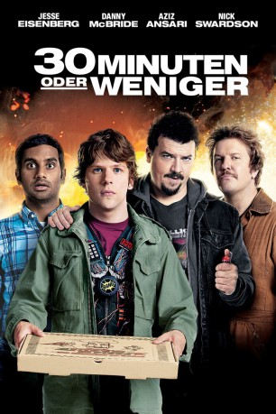

#3732 30 Minuten oder weniger
 
 IMDB-Wertung: 6.1 / 10
IMDB-Wertung: 6.1 / 10  Metascore: 0
Metascore: 0 
Nick arbeitet in einer Kleinstadt als Pizza-Lieferant. Sein Leben ist ziemlich eintönig, bis er eines Tages auf zwei Möchtegern-Kriminelle stößt. Das unberechenbare Duo kidnappt Nick und zwingt ihn dazu, eine Bank zu überfallen. Weil ihm nur wenige Stunden bleiben, um das Unmögliche möglich zu machen, bittet Nick seinen ehemals besten Freund Chet um Hilfe. Während die Uhr tickt, müssen sich die beiden mit der Polizei, Auftragskillern, Feuerwerfern sowie – nicht zuletzt – ihrer eigenen gestörten Beziehung herumschlagen.
Jahr: 2011
Dauer: 83 Minuten
FSK: 16
Land: Deutschland Studio: Sony Pictures ReleasingTonspuren: DTS - ,
Untertitel: Deutsch,
Auflösung: 1080p (1920x800) Größe: 5007 MB
Genre: Action, Komödie, Krimi
Regisseur: Ruben Fleischer
Drehbuch: Moe Jelline
Soundtrack:
Darsteller:
 Jesse Eisenberg als Nick
Jesse Eisenberg als Nick Danny McBride als Dwayne
Danny McBride als Dwayne Aziz Ansari als Chet
Aziz Ansari als Chet Nick Swardson als Travis
Nick Swardson als Travis- Dilshad Vadsaria als Kate
 Michael Peña als Chango
Michael Peña als Chango- Bianca Kajlich als Juicy
 Fred Ward als The Major
Fred Ward als The Major- Elizabeth Shapiro als Chet's Date
 Brett Gelman als Pizza Boss
Brett Gelman als Pizza Boss- Staci Lynn Fletcher als Family Dollar Cashier
- Ilyssa Fradin als Mom
- Rebecca Cox als Sandra
- Rick Irwin als Bank Manager
- Lucas Fleischer als Random Local
- Aubree Knight als The Pool Girl , uncredited
- Geoff Pilkington als Cocky Guy on Dance Floor , uncredited
- Ron Shedd als Bar Patron , uncredited
- Angelique Sky als Club Bartender , uncredited
- Sam Johnston als 15 Year Old #1
- Jack Foley als 15 Year Old #2
- Paul Tierney als Rodney
- Gary Brichetto als Mr. Fisher
- Grace Heemstra als Daughter
- Torey Adkins als Big Guy
- Sam Tedesco als Security Guard
- Wayne Bibbs als Bank Customer
- Joseph Lyman als Alley Cop
- David Fleischer als Bus Passenger #4
- Matthew Sullivan als Random Tanning Guy
- Ashley Adler als Club Dancer , uncredited
- Emily Grauman als 7th Grader , uncredited
- Rebecca Guth als Woman Shopping , uncredited
- Vaughn Higginbotham als Pizza Guy , uncredited
- Sydney Lumbert als Classmate , uncredited
- Alex Rush als Major Tan Bikini Girl , uncredited
- Robin E Silas als Chet's Dad , uncredited
- Stephanie Yousif als Major Tan Bikini Girl , uncredited
Datei: X:\2011(A-F)\30 Minuten oder weniger (2011, FSK16, 1920x800).mkv seit 27.05.2016
Festplatte: HD 2010(G-Z)-2011(A-F)
 Es gibt insgesamt 86 Filme in der Gruppe '2011(A-F)'
Es gibt insgesamt 86 Filme in der Gruppe '2011(A-F)'